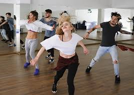

Home | About Us | General Information | Special Events | Contact Us
All students take combination classes of tap, ballet and jazz through to level five. Students are given the opportunity to select which dance types they wish to continue and these classes are taught in hour formats.
Every student is evaluated throughout the year. Everyone works together to place each student every year at a level that is both appropriate and challenging. Our schedule accommodates a variety of levels and dance styles to interest every student from beginner to advanced and toddler to teen. Our mission is to make each student's dance education a fulfilling experience.
Types of Classes Offered: BALLET/POINTE Ballet classes improve strength, flexibility, poise and control. Warm-up barre exercises progress to more challenging center work. The emphasis is on grace and musicality. JAZZ Energetic and expressive, jazz focuses on rhythmic movement with various body isolations. Most of the dancing you see in musicals, films and pop videos is jazz. TAP In tap, the emphasis is on the footwork and the expression of rhythm through sound. Students practice control, coordination, and agility while getting caught up in the pure pleasure of making music with their feet. HIP-HOP Hip-hop means the whole culture of the movement of how you act, walk, look, dance are all part of the hip-hop culture. Whatever music gives you that groove or the beat... it's all part of hip-hop. ZUMBA Zumba is a patented fitness class format offered through zumba fitness that contains Latin dancing with interval and resistance training for a full body rhythmic workout. You don't need to be a great dancer to enjoy the benefits of Zumba. Zumba aims to make exercise fun with upbeat music with a positive environment.
Source: http://www.dancefacts.net/dance-types/types-of-dances/
